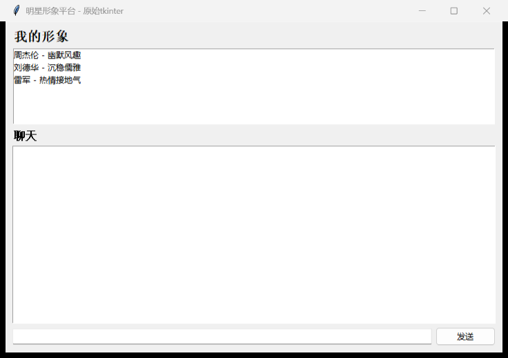
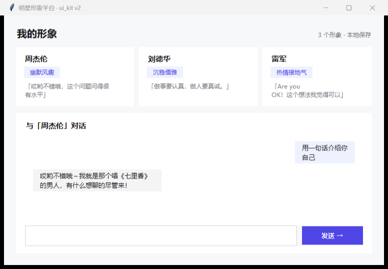

A · 现状：裸 tkinter
今天产物的真实水平
模型无视 ui_kit 教学后的本能输出：默认字体、默认控件皮肤、无视觉层级。你说的"古早"就是它。
B · ui_kit v2（批7，~1 天）
tkinter 上限内的克制专业
一个主色+卡片+字阶+clam 全套定制。没有圆角阴影（tkinter 做不了），但干净、有秩序。前提：骨架预接线让模型绕不过去（今天证明"教"没用）。
C · pywebview 渲染层（大批）
HTML/CSS，视觉进 2020s逻辑层仍是 Python（契约/驱动/种子/探索桥全保留），UI 换 HTML：圆角、阴影、渐变、动效都有。代价：探索桥要加 HTML 驱动通道，约一批工程量。